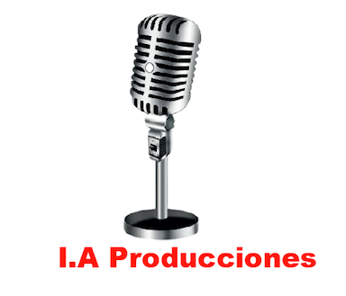

La historia enmarca a los hombres como los actores y líderes principales del deporte y del periodismo deportivo, pero la evolución misma ha hecho que hoy en día la mujer también esté en esos espacios. No es un misterio la sociedad conservadora en la que Colombia vivía, en donde los géneros eran catalogados y los trabajos eran definidos. Sin embargo, las mujeres mismas se han encargado de demostrar, lastimosamente, día a día que un género no define las capacidades.
Este producto nace a través de un miedo, inseguridad y una constante lucha por buscar la respuesta. Es la respuesta a una pregunta constante; ¿porque el periodismo deportivo es tan machista? Es difícil incursionar en un campo en donde a diario vemos hombres, oímos hombres, sentimos hombres y la mujer poco a poco aparece. Es el resultado de los últimos 10 años en donde el periodismo, el periodismo deportivo, el deporte y mi género se han unido. El producto es la unión de varias voces que demuestran que vivimos en una sociedad constante, pero que en donde las ideas patriarcales y conservadoras siguen siendo nuestra sombra.
Tras los relatos de los 12 periodistas deportivos y los 3 directores de medios se puede concluir que hoy en día la mujer tiene más presencia, más campo, más credibilidad y más respeto tanto por las audiencias como por el medio, que antes. Sin embargo, hay un camino muy grande para seguir recorriendo. El camino se terminará cuando a la mujer se le deje de cuestionar todo por su sexo, cuando a la mujer le crean por igual que a los hombres, cuando no se fijen primero en su cuerpo que en su conocimiento y cuando porfin no sea extraño oir o ver a una mujer hablando de deporte.
Hacer este producto como mujer fue un reto. Fue evidenciar todos los obstáculos, críticas, desafíos y abusos que una mujer tiene que vivir, una mujer como la autora. Sin embargo, fue interesante poder analizar e investigar la situación desde los ojos de un académico y más no con el sentimiento. Fue un reto interesante, reconocer el campo laboral del género femenino, entender los procesos que se ha tenido que vivir y poder dar una visión general de lo que hoy se vive. Sin embargo, es difícil darse cuenta todo lo que tiene que vivir una mujer comparado a un hombre, pero es gratificante ver la evolución que se ha tenido y los espacios que las mujeres han tenido que luchar para conquistar.
La caracterización de la mujer en el periodismo deportivo es el resultado de más de 15 voces unidas que forman el periodismo deportivo en Colombia. Es la suma de experiencias, de retos, de incertidumbre y de muchas dudas, que en conjunto es la respuesta a que hoy por hoy la mujer tiene un espacio en un campo socialmente idealizado como masculino. Es la realidad de miles de mujeres que día a día, con miedo e incertidumbre, entran a su pasión; el periodismo deportivo.>